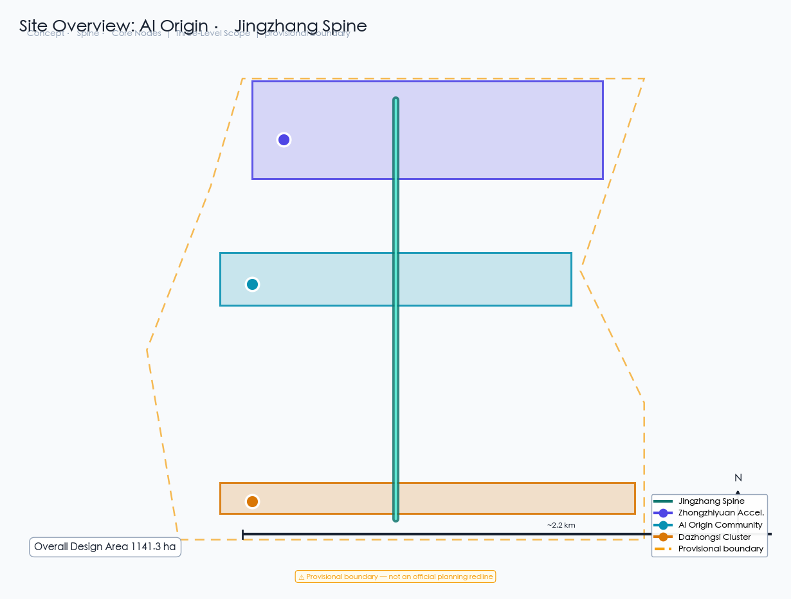
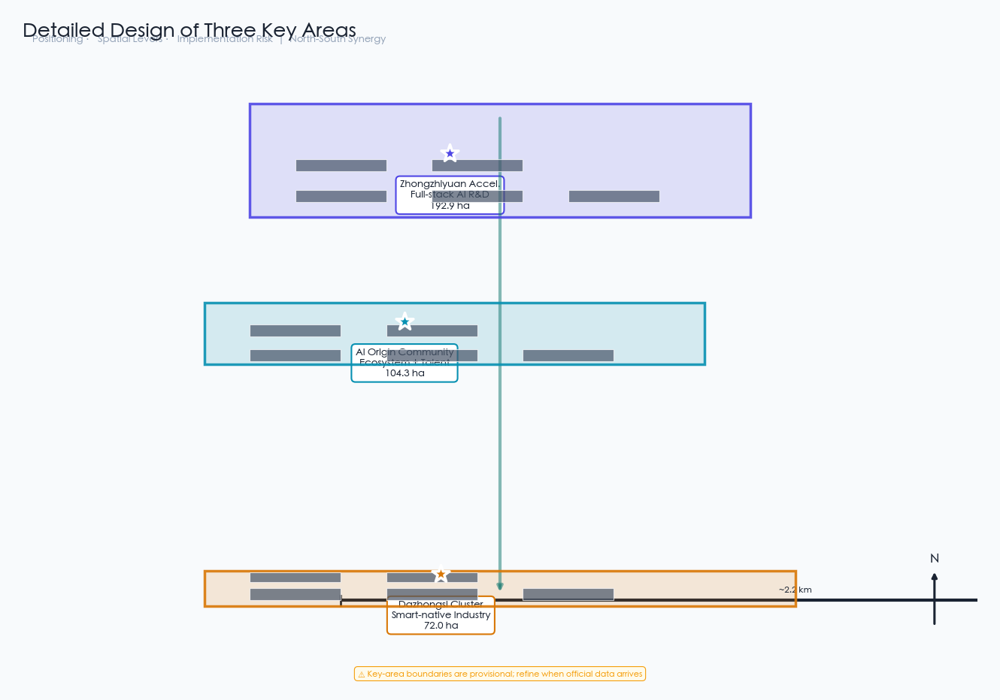
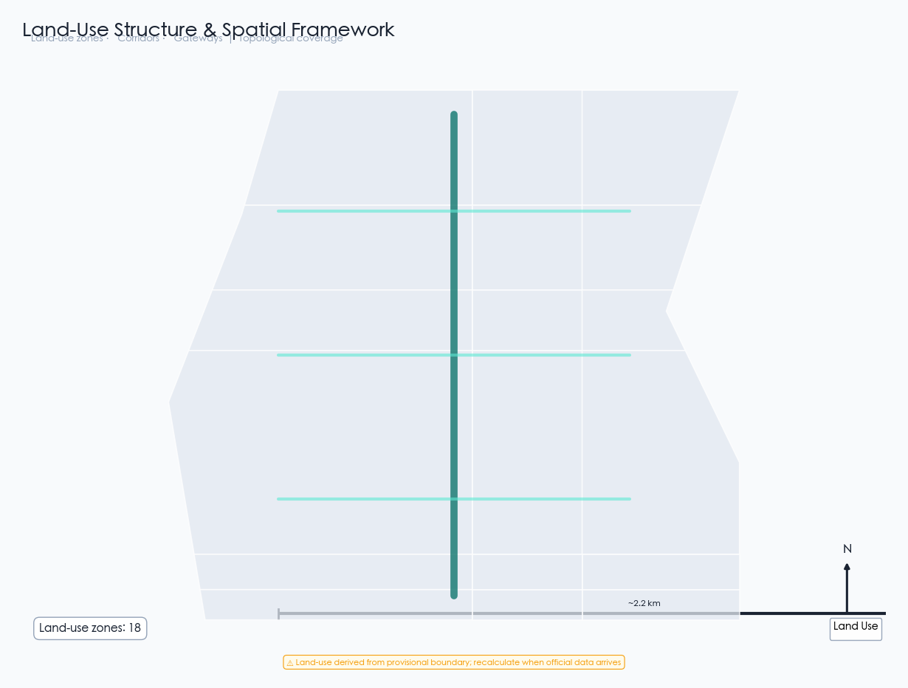
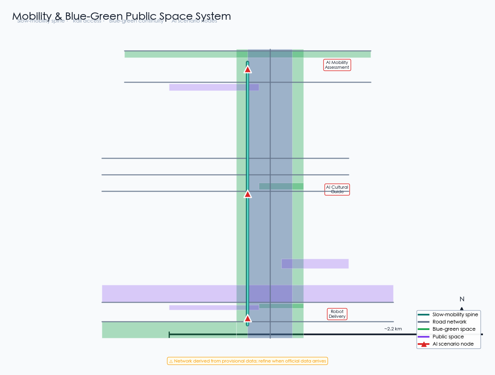
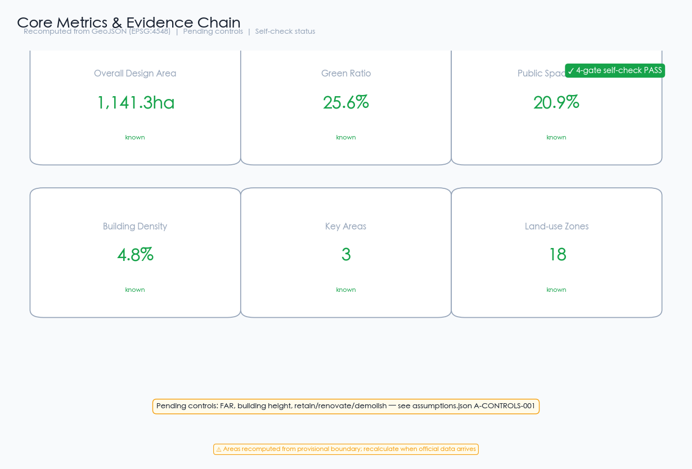

AI Origin · Jingzhang Spine | A Century-Old Railway Corridor Reborn




Jingzhang Heritage Park green spine is the core blue-green space, connecting three zones, green ratio 25.6%
15 concept buildings, total footprint ~550,000 sqm, building density 4.8%
12 AI scenario cards covering traffic, health, education, enterprise, culture, robotics, safety, testing, consumption, computing, governance, communication
